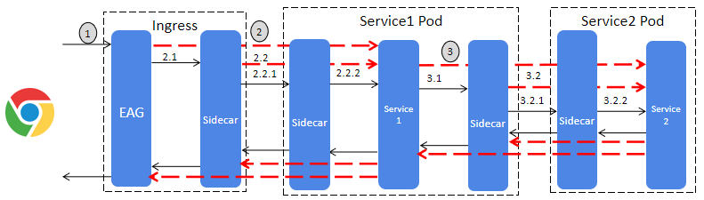

微服务之间的流量经过服务网格接管后，在微服务之间引入了多个代理层，微服务之间的通信变得更为复杂了。下图分析了一个客户端请求的流量是如何在服务网格中进行路由的。
备注：由于Istio Ingress Gateway的功能缺少API管理功能，因此下图采用了API Gateway + sidecar来作为Ingress，和原始的Istio Ingress有所不同，但流量转发逻辑类似。Istio Ingress和API Gateway的差异分析参见文章：https://zhaohuabing.com/post/2018-12-27-the-obstacles-to-put-istio-into-production/#service-mesh-and-api-gateway
 从上图可以看到，客户端请求从进入系统入口的Ingress，到到达后端提供服务的应用，经过了多次IPtable的重定向和Envoy的转发。
其转发流程如下：（备注：为简略起见，本流程中未描述客户端端口）
1: Client IP ---> Ingress Public IP: Server Port
2: Ingress Internal IP ---> Service 1 IP: Server Port
2.1: Ingress Internal IP ----(IPtable DNAT)---> 127.0.0.1: 15001
2.2: Ingress Internal IP---> Service1 IP:Server Port
2.2.1: Ingress Internal IP ----(IPtable DNAT)---> 127.0.0.1: 15001
2.2.2: Service1 Sidecar IP ---> 127.0.0.1: Service1 Server Port
3: Service1 IP ---> Service2 Server Port
3.1: Service1 IP ----(IPtable DNAT)---> 127.0.0.1: 15001
3.2: Service1 IP ----> Service2 Server Port
......
如果Istio配置错误导致通信故障，从应用层面上很难直接查找原因。需要通过各种手段从TCP通讯层，Pilot,Envoy等多处获取信息，对故障进行分析。